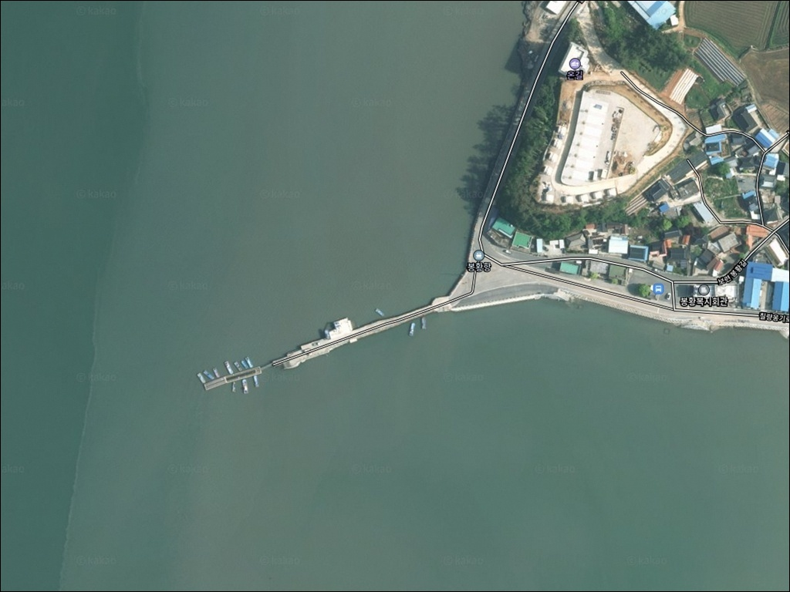
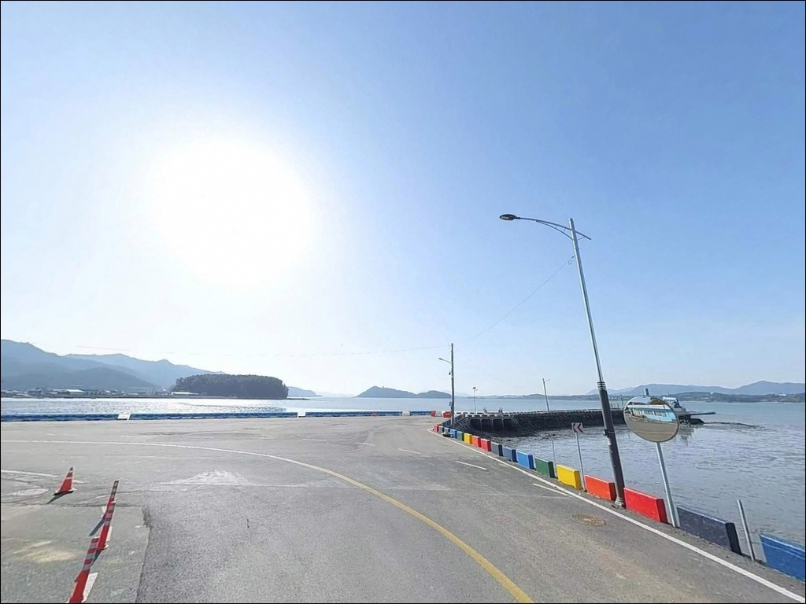
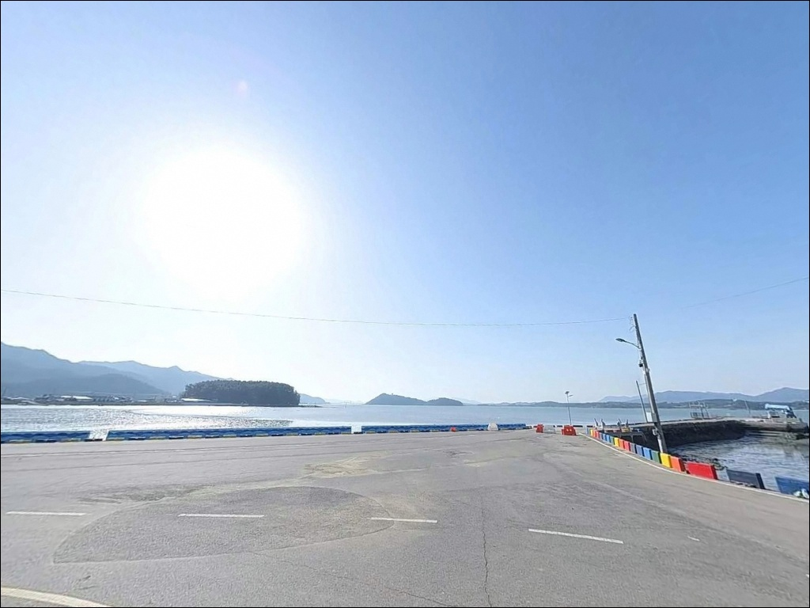
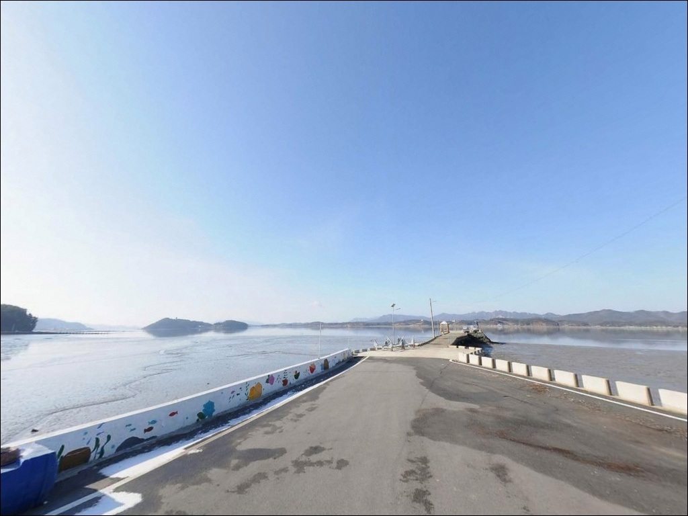
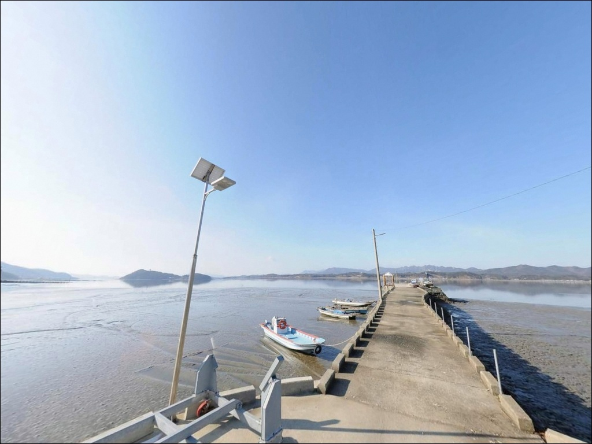
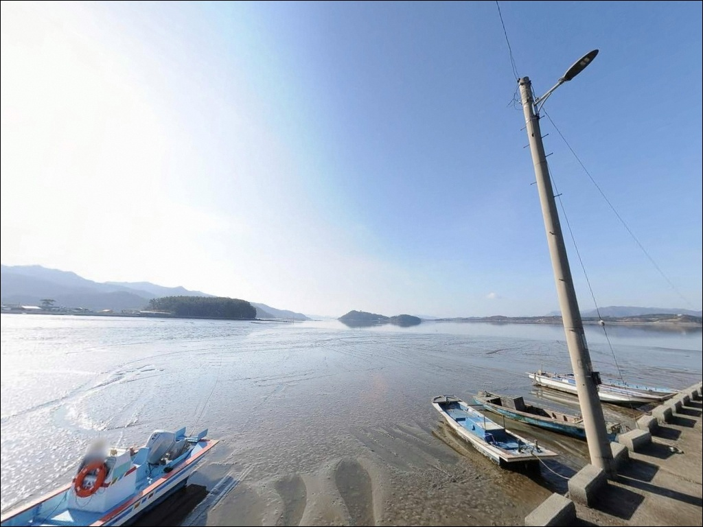
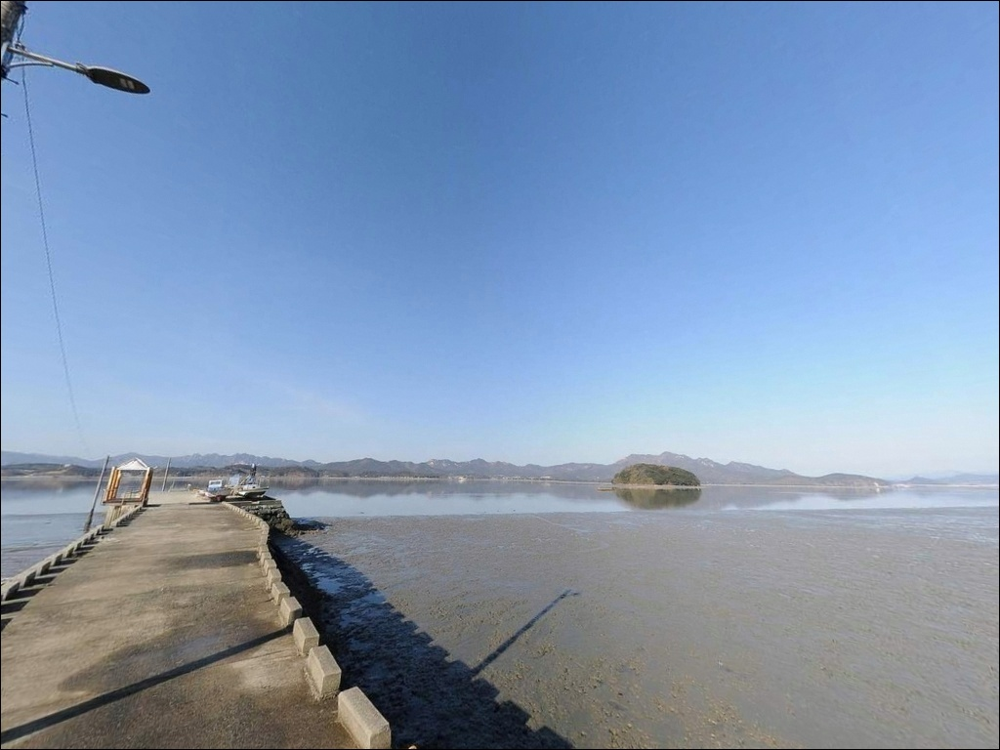
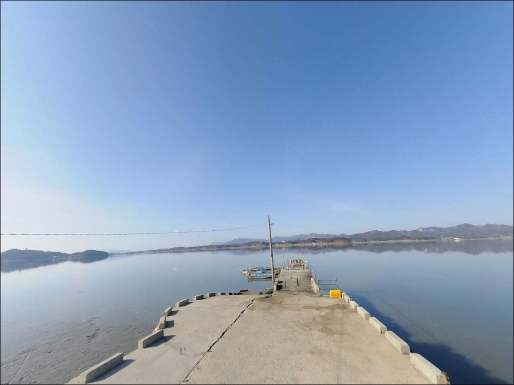
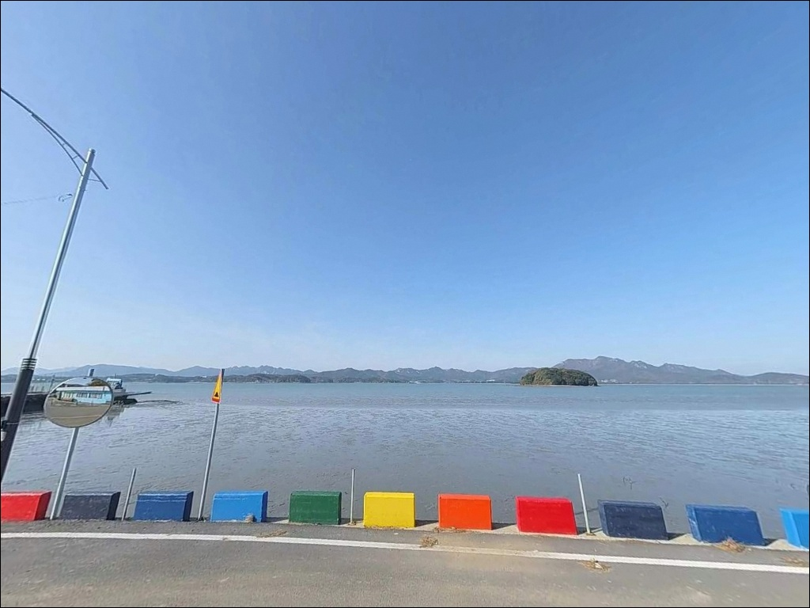

봉황항, 전남 강진군 바다 전망이 예술인 노지 차박 낚시 스팟
이 페이지에는 광고(제휴 링크 포함)가 있으며, 광고 링크를 통해 구매하면 운영자가 판매 수익 또는 수수료를 받을 수 있습니다. 포인트 사진: 카카오맵 스카이뷰·로드뷰. 이 페이지의 지도·사진 이미지는 카카오맵의 실제 서비스 이미지와 다를 수 있습니다.


포인트 안내
봉황항
전남 강진군 칠량면 봉황리 168-40
강진만 내만 어항에서 가장 많이 하는 실수는
물때 확인 없이 출발하는 것입니다.
간조 시 항 앞 갯벌이 완전히 드러나는 지형 구조로,
채비를 던질 수 있는 수면 자체가 사라집니다.
봉황항은 전남 강진군 칠량면 봉황리에 자리한
소형 연안어항입니다.
강진만 안쪽으로 깊숙이 들어온
내만형 지형에 위치해 외해 파도 영향이 없으며,
어촌뉴딜사업으로 방파제와 물양장 정비가
완료된 항구입니다.
칠량 앞바다와 죽도섬을 마주보는
조용한 생활낚시 포인트입니다.
이 글은 봉황항의 진입 동선, 차박 여건,
물때 기반 낚시 판단 기준,
지형에 어울리는 낚시 스타일에 집중합니다.
조황 단정이나 특정 어종 보장은
이 글의 범위에 포함되지 않습니다.

1. 진입 동선과 포인트 접근성
칠량면 소재지에서 청자로를 이용하면
봉황지하교차로로 연결되며,
이후 칠량옹기로를 따라
봉황항 방면으로 직접 진입하는 구조입니다.
2차선 도로 수준으로 포장 상태가 양호하며,
승용차와 캠핑카 진입에 무리가 없는
폭이 확보된 편입니다.
항 주변은 봉황리·보련마을 자연취락지구로,
마을 도로 폭이 넓어 회차에 불편함이 없습니다.
어촌뉴딜사업 정비로 물양장과 선착장 구역이
정돈되어 있어 주차 후보지를 찾기 어렵지 않습니다.
방파제 기점부 공터와 물양장 하역 공간 주변이
주차 활용도가 높은 지점입니다.
어선 입·출항 시간대에는
선착장 앞 하역 동선이 활성화됩니다.
주차 후 차량 위치를 다시 한번 확인하고,
어업인의 통행 우선권을 배려하는 것이
기본 매너입니다.

2. 차박 환경과 야간 체류 여건
봉황항은 민가가 항 주변에 분산 배치된
조용한 어촌 마을 분위기입니다.
마을 도로변과 항 인근 공터를 활용하는
단기 대기 차박이 가능한 구조이며,
야간 차량 통행이 거의 없어
소음 환경은 안정적인 편입니다.
어촌뉴딜사업으로 항 일대에
마을쉼터와 가로수길이 조성된 구역이 있으며,
가로등도 일부 설치된 환경입니다.
방파제 끝단 쪽으로 갈수록
조명이 약해지는 구간이 있으므로,
야간 낚시 시 헤드랜턴은 필수 장비입니다.
강진만 내만 특성상 파도 소음이 없고
바람 영향도 외해에 비해 제한적입니다.
낚시를 마치고 짧게 머무는 용도로는
나쁘지 않은 환경이나,
장기 차박을 목적으로 한다면
인근 마을과의 거리 조건과
소음 관리를 함께 고려해야 합니다.


3. 주변 편의시설 및 인프라 현황
봉황항 반경 1km는 봉황리·보련마을 어촌 지역으로
상업 시설을 기대하기 어렵습니다.
식수, 얼음, 낚시 소품은
출발 전에 완비하고 진입하는 것이
현실적인 준비 방식입니다.
칠량면 소재지 방면으로 3km권 이동하면
강진남부농협 하나로마트와 주유소,
대지식당, 남도낚시프라자가 위치합니다.
낚시 용품이나 미끼가 부족할 경우
이 동선을 활용하는 편이 효율적입니다.
10km권 강진읍으로 이동하면
편의점, 대형마트, 강진의료원 등
광역 인프라를 이용할 수 있습니다.
응급 상황 대비 경로는
출발 전에 미리 파악해 두는 것이
기본 안전 준비입니다.

4. 방문 전 물때 확인이 조과를 결정합니다
봉황항 방문 전 가장 먼저 확인해야 할 것은
물때입니다.
강진만 내만 특성상 조석 간만의 차가 크며,
간조 시에는 항 앞 갯벌이 드러나
낚시 자체가 불가능해집니다.
중들물 이후부터 만조 전후까지가
실질적인 낚시 가능 구간입니다.
바다타임에서 봉황리 인근 기준 물때를 확인하고
만조 타이밍에 맞춰 출발 시각을 설정하는 것이
이 포인트를 제대로 공략하는 방법입니다.
사리 전후 들물이 강할 때는
봉돌 무게를 올려 채비를 안정시키는 것이
조류 변화에 대응하는 기본 운용 방식입니다.
강진 지역은 연평균 강수량이 높은 편이라
기상 예보 확인도 출발 전 필수 절차입니다.
방파제 낚시 시 구명조끼는 반드시 착용하며,
어선 입·출항 시간대에는
선착장 주변 낚시를 잠시 중단하고
어업인에게 통행 우선권을 양보합니다.

5. 지형 기반 낚시 여건 분석
봉황항은 강진만 안쪽으로 깊숙이 파고든
구강포 동쪽 연안에 자리합니다.
외해 직접 노출이 없는 내만형 구조로
조류 흐름이 완만하고 수면이 잔잔한 편입니다.
방파제와 물양장이 어촌뉴딜 정비로
낚시 접근성이 개선된 구조이며,
방파제 끝단에서 외항 방면으로
수심이 깊어지는 패턴을 보입니다.
내항은 수심이 얕고 바닥이 완만하게 이어집니다.
간조 시 갯벌이 드러나는 구간이 넓어
물때 판단이 조과 전체를 좌우합니다.
만조 타이밍에 맞춰 입장하면
방파제 외항 방향 캐스팅 구간에서
바닥층 탐색이 안정적으로 가능한 지형입니다.
강진만 내만 해역은 계절별로
생활 어종 유입이 반복되는 구조입니다.
붕장어, 도다리, 가자미류, 숭어, 노래미, 우럭이
이 일대에서 기대해 볼 수 있는 어종이며,
수온이 안정되는 봄·가을에
활동성이 높아지는 경향을 보입니다.
출조 전에 봉황항 또는 강진 칠량면 조황을
반드시 검색해 보시기 바랍니다.


6. 봉황항 지형에 어울리는 낚시 스타일
이 포인트에서 가장 안정적인 낚시는
원투낚시입니다.
방파제 끝단에서 외항 방향으로
채비를 멀리 보내면
모래와 펄이 섞인 혼합 바닥층을
탐색하는 구조가 갖춰집니다.
만조 전후 1~2시간 집중 투척이
이 포인트에 가장 잘 맞는 운용 방식입니다.
찌낚시도 방파제 끝단과 외항 방향 공략에
잘 어울립니다.
잔잔한 수면 조건이 찌 움직임을
명확하게 확인할 수 있는 환경을 만들어 주며,
감성돔과 숭어가
가을·초겨울 시즌에 활성도가 올라오는
어종입니다.
라이트 루어낚시는 방파제 구조물 주변을
중심으로 탐색하는 방식이 유효합니다.
소형 웜 채비로 바닥층 위주 탐색을 하거나,
들물 시간대 방파제 끝단에서
농어 루어를 운용하는 방식도
이 지형 구조에 어울립니다.
구조물 인접 구간 천천히 탐색하는 방식이
이 포인트 특성에 맞습니다.

7. 대안 포인트와 플랜 B 동선
봉황항 조류 조건이 맞지 않거나
물때를 놓쳤을 때
가장 먼저 떠올려야 할 대안은
마량항 방파제입니다.
봉황항에서 약 15km 거리이며,
강진만 해역권을 공유하는 강진군 대표 국가어항으로
낚시 인프라가 집중된 포인트입니다.
마량항은 방파제 길이가 690m 수준으로
원투낚시와 루어낚시 운용 폭이 넓고,
선상낚시까지 가능한 거점 역할을 합니다.
봉황항을 처음 찾는 날이라면
마량항을 출발 기점으로 잡고
봉황항을 병행 탐색하는 동선이
이 권역을 효율적으로 활용하는 방법입니다.
조용한 시설 환경을 원한다면
봉황항에서 약 12km 거리의
가우도 복합낚시공원을 대안으로 활용할 수 있습니다.
유료 입장 방식의 관리형 낚시터로
강진만 내만 어종을 안정적인 환경에서
공략하는 데 적합합니다.

물때만 맞추면
봉황항은 조용하고 실속 있는 포인트입니다
원투낚시나 찌낚시로 강진만 내만 어종을
조용히 탐색하고 싶은 낚시인이라면
봉황항 지형 조건은 잘 맞는 구조입니다.
외해 파도 영향이 없고 수면이 잔잔한 환경은
초보 낚시인도 채비를 안정적으로
운용하기 좋은 조건을 갖추고 있습니다.
반면 물때 확인 없이 간조 무렵에 찾아가거나,
편의시설을 현장에서 해결하려는 계획이라면
상당히 불편한 포인트가 될 수 있습니다.
바다타임 물때 확인, 칠량면 소재지 사전 보급,
진입로 위성지도 점검,
이 세 가지를 갖추고 출발하면
번거로움 없이 낚시에만 집중할 수 있는
조용한 어항 포인트입니다.
낚시 후 강진만 야경 속에
잠깐 차 한 잔 마시며 머무는 차박 여행자라면,
마을 소음 관리만 지켜 준다면
낚시와 하룻밤을 함께 묶어
소박하게 즐기기 좋은 출조가 될 수 있습니다.